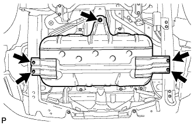
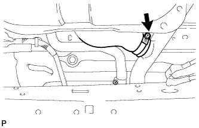
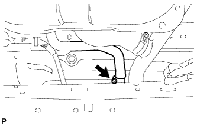
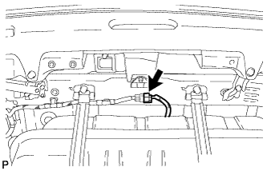
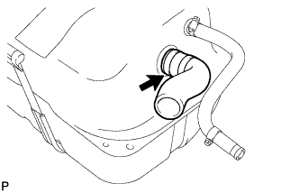

УЗЕЛ ТОПЛИВНОГО БАКА > СНЯТИЕ |
| 1. DISCONNECT CABLE FROM NEGATIVE BATTERY TERMINAL |
| 2. REMOVE NO. 2 FUEL TANK PROTECTOR |
|  |
Remove the 5 bolts and No. 2 fuel tank protector.
| 3. DISCONNECT FUEL HOSE |
Disconnect the fuel evaporation hose, fuel breather hose and 2 fuel hoses.
| 4. DISCONNECT FUEL TANK TO FILLER PIPE HOSE |
|  |
Disconnect the fuel tank to filler pipe hose from the filler pipe.
| 5. DISCONNECT FUEL TANK BREATHER HOSE |
|  |
Disconnect the fuel tank breather hose from the filler pipe.
| 6. REMOVE FUEL SUB TANK SUB-ASSEMBLY |
|  |
Disconnect the fuel sender gauge connector.
Set a transmission jack underneath the fuel sub tank.
 |
Remove the 4 bolts and disconnect the 2 fuel tank bands.
Remove the fuel sub tank.
| 7. REMOVE FUEL TANK VENT TUBE ASSEMBLY |
Detach the wire harness clamp.
Remove the 8 screws and fuel tank vent tube.
Remove the gasket from the fuel tank vent tube.
| 8. REMOVE FUEL TANK TO FILLER PIPE HOSE |
|  |
Remove the fuel tank to filler pipe hose from the fuel sub tank.
| 9. REMOVE FUEL TANK BREATHER HOSE |
 |
Remove the fuel tank breather hose from the fuel sub tank.